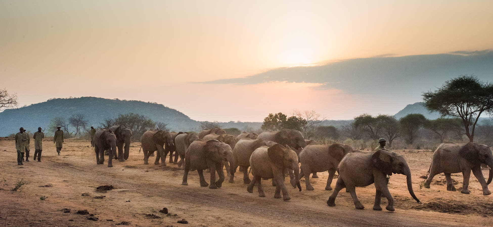
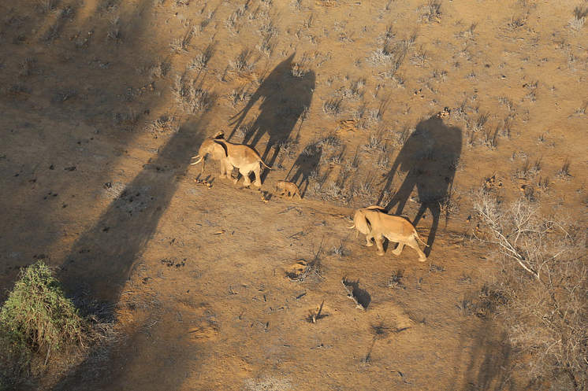
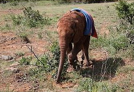
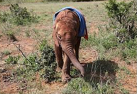
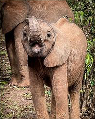
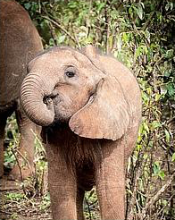
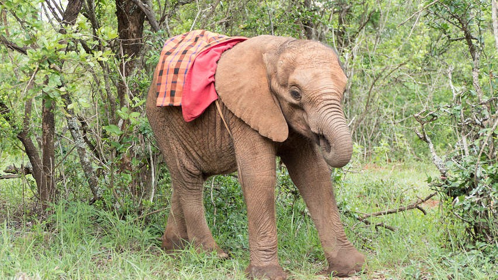
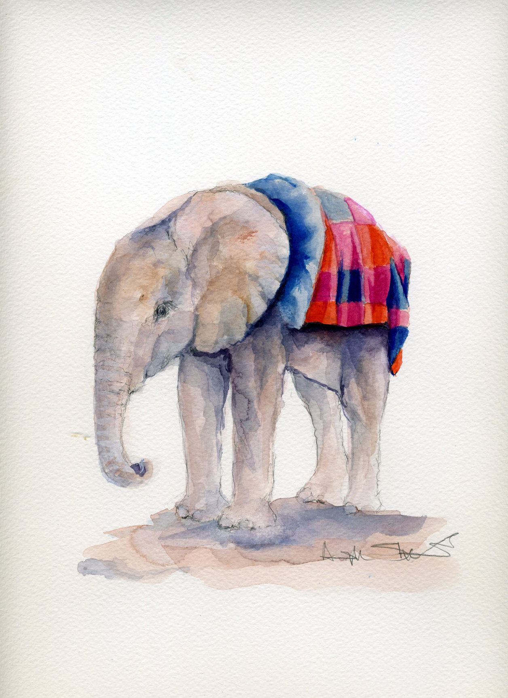
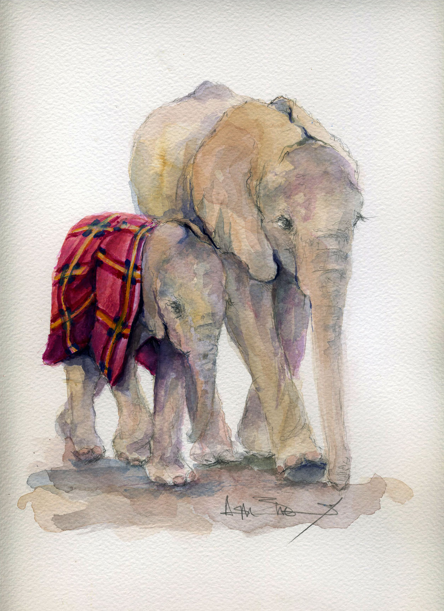

March, 2019
Sheldrick Wildlife Trust
Press secretary at Animat Habitat™
The Sheldrick Wildlife Trust (SWT) is based in Nairobi, Kenya, and headquartered on the border of Tsavo East National Park. The Trust was originally founded as The David Sheldrick Wildlife Trust — founded in memory of the late David Sheldrick in 1977, by his wife Daphne Sheldrick. David Sheldrick is remembered to this day as one of Africa's pioneering National Park wardens:
”With just one lorry, and a handful of labourers, he was given the task of transforming a huge chunk of inhospitable arid land, previously uncharted and known only as the Taru desert, into what today is Kenya's largest and most famous National Park – Tsavo. The park was established […] in 1948 and David Sheldrick was the first warden of the Eastern Sector, an area of just over 5,000 square miles, […] a post he held until he was transferred to head the Planning Unit for all Kenya's Wildlife Areas at the end of 1976. David died 6 months later, but the legacy he left endures.“ [1]
For over 50 years, Dame Daphne Sheldrick, alongside her husband, David Sheldrick in the early days, reared orphan elephants back to a life in the wild. [2] Daphne was the first person to find a suitable composition of milk fats to successfully hand raise a milk dependent new born elephant, and her formula pioneered rehabilitation programs for orphan elephants across the continent. [3] These days the Sheldrick Wildlife Trust works alongside the Kenya Wildlife Service (KWS), the Kenya Forest Service and local communities on a multifaceted approach to wildlife conservation: anti-poaching, safe guarding the natural environment, enhancing community awareness, addressing animal welfare issues, providing veterinary assistance to animals in need, and rescuing and hand rearing elephant and rhino orphans, along with other species that can ultimately enjoy a quality of life in wild terms when grown. [1]
Nairobi Nursery
The nursery program began with the orphaned animals Daphne and David hand raised in the 1950s. As warden of Tsavo East National Park, David Sheldrick was often placed in close contact with orphaned elephants and rhinos and so on. This presented a unique opportunity for Daphne and David to study elephant behaviour and understand both the physical and psychological needs of orphaned elephants.
Rampant poaching fueled a booming ivory trade in the 1970s, leaving behind hundreds of orphaned elephants, many of them still milk dependent. As the world slowly woke up to the devastating impact of the elephant poaching crisis, Sheldrick Wildlife Trust was building a very first orphan stockade and hand raising its first orphans as an organization. With the elephant Nursery firmly established within Nairobi National Park in the 1990s, more and more orphans came into the care of the Nairobi Nursery as a result of poaching and human-wildlife conflict and so on. [2]

“Orphans line.” Nairobi Nursery, 2019 © SWT [sheldrickwildlifetrust.org]
The Nairobi Nursery provides a safe haven for elephants aged three years and younger, who have lost their mothers, all too often as a result of human activity. Keepers are on hand all day, every day, to ensure recently rescued orphaned elephants have a secure environment in which to grow. After an elephant graduates from the nursery, they are transferred to one of three Sheldrick Wildlife Trust reintegration units: Voi in Tsavo East National Park, Ithumba in Tsavo East National Park, and Umani Springs in Kibwezi Forest – Chyulu Hills National Park. These units are home to still dependent orphan elephants aged three years and older, who are transitioning to a fully independent life in the wild.
We helped to foster a young baby elephant when she arrived at the nursery in late 2017. We have followed her rescue and rehabilitation, and have wanted to share her story to show how this project on the ground fits into the big picture of elephant conservation. Here, from Sheldrick Wildlife Trust, the story of an elephant named Kiasa, the sassy tail biter.
Kiasa, Tsavo (2017- )
This chapter begins with Neville Sheldrick on a routine patrol flight in one of the Sheldrick Wildlife Trust planes, heading to the Southern sector of Tsavo East National Park from the SWT Kaluku headquarters. While en route, he noticed a tiny elephant calf escorted by two big bull elephants, then surveyed the area looking for evidence of elephant herds but sighted no other elephants. A few days earlier while on an aerial patrol Neville had reported the sighting of a dead female who had succumbed to the effects of drought not far from this very same location. Concerned that something was not quite right with this picture, he reported the matter to both the Kenya Wildlife Service and also to the SWT Kaluku operations room. Neville continued on to complete his patrol in the south where the drought had really taken hold, with numerous elephants dying as a result of a lack of food due to failed rains. [4]

“Kiasa with two bulls.” Tsavo, 2017 © SWT
SWT confirmed: two bull elephants with a tiny baby and no females or other elephants in the area. Neville coordinated to collect KWS Veterinary Officer Dr. Jeremiah Poghon working with the SWT funded Mobile Veterinary Unit based in Tsavo, to fly to the closest airstrip where an SWT helicopter then flew them to the scene. A local SWT unit, which works together with KWS, was also directed to the location, and waited for a signal from the air.
The calf was an estimated age of five to eight months. Dr. Poghon agreed that without a rescue this young baby would not survive, but first flew around to confirm once again that there were no other elephants in the area. The fact that so many elephants had succumbed to the effects of recent drought, and the location of the recently discovered carcass of a dead female, left little doubt that she was an orphan being cared for by these well-meaning gentle bulls. Sadly conditions remained desperately dry and while these two bulls offered comfort and much needed protection from predators, without milk this calf would most certainly die.
Given the open terrain, the helicopter managed to separate the bulls from the baby so that the SWT unit on the ground could approach safely. She was still strong, but little time was wasted while the ground team prepared the stretcher and tied her legs so that the baby elephant could be safely loaded into the helicopter and flown directly to the Nairobi Nursery. [4]
Sheldrick Wildlife Trust welcomed eight-month-old milk dependent calf Kiasa to the nursery in late 2017.

“Kiasa getting stronger.” Nairobi Nursery, 2017 © SWT

“Kiasa keeping her distance.” Nairobi Nursery, 2017 © SWT
Since she arrived at the nursery, Kiasa has kept the Keepers and matriarch elephants on their toes, sneaking away from the herd during the day and causing mayhem at milk feeds.
August 2018
Kiasa is still as naughty as ever at feeding times, and is still brought in last for the milk feeds. She is determined to try and steal another bottle from her age mates once she is finished, forcing the Keepers and other elephants still feeding to turn in tight circles to try and avoid her demands. The matriarch Tagwa keeps a vigilant eye on Kiasa and does try to instill some discipline where she can, chasing Kiasa away from the group when she is causing too much trouble.

“Happy settled girl.” Nairobi Nursery, 2018 © SWT

“Kiasa sucking her trunk.” Nairobi Nursery, 2018 © SWT
After a year at the nursery, Kiasa is still sassy as ever but is starting to show an affectionate side with a new arrival named Merru:
September 2018
On Merru’s first day out in the forest Kiasa welcomed him into the group, hugging him with her trunk, [tending to his every whim], following him everywhere and escorting him to meet the others.
Naturally, the Keepers were pleasantly surprised to see this change of heart. Kiasa is starting to be less demanding at feeding times:
December 2018
One day she even turned back and escorted Merru and Mukkoka to the feeding area and patiently waited there for a Keeper to bring her a bottle. The Keepers were astounded by these very caring gestures from an apparently reformed sassy girl, who really has changed with the arrival of the new orphans. Her newfound caring nature has begun to annoy Sana Sana however, as she too wants to take care of the babies, and sometimes you can see Sana Sana taking advantage of her age and size to chase little Kiasa away so she can play the attentive motherly role without interference.
[In December] 2018, Sana Sana, Malkia and Ndiwa were moved to the Ithumba Reintegration stockade in Tsavo East […] on their journey back to a wild life. It is important to understand that this is a journey, and one that takes many years, sometimes up to as many as eight to ten years before an orphan has the confidence to spend protracted time away from their human family.
Back at the Nursery, Tagwa was quick to fill the gap and pick up the mantle of matriarchal duties, with little Tamiyoi by her side. The morning after the three had departed, Tagwa watched over the herd with great intent. Sagala, who was quite attached to Sana Sana and Ndiwa, spent her day close to Tagwa and Kuishi, drawing comfort, as she missed her friends who she used to go for walks with. The orphans browsed close to the Keepers and did not wander off into the forest, as Tagwa and Kuishi are not that fond of going on long walks, and prefer to keep their beloved Keepers in site at all times. Everyone in the Nursery rapidly adapted to the new set up with the three big girls absent, and the new big girls in charge.
December is characteristically a lot warmer than the preceding rainy months, as we move into the hot weather of January, and all the orphans have been playing in the mud bath on a regular basis. Kiasa likes to be the center of attention, and takes to submerging herself in the mud bath at visiting times. She then starts to splash mud on her back using her trunk, and splashes visitors behind her with muddy water as well, caught unawares!
Here is a curated selection of Keeper updates on Kiasa and the Sheldrick Wildlife Trust nursery in Nairobi.
+− January 2018
Kiasa’s desire to have extra milk by all means possible is growing day by day! The ‘sassy’ girl as the keepers refer to her will try and use any manoeuvre possible to get closer to the milk wheel-barrow which is very funny to watch. She seems to have learnt these tactics from the playful girl Malima. She was being naughty at the 9am milk feed this morning, dodging the keepers as they tried to feed her friends and trying to get as close as possible to the wheelbarrow to steal another bottle. Her antics continued up to the public visiting time and the 11am feeding but this time she kept pushing trying to get another bottle from her friends. At one stage she made off with an empty bottle and carried it away, walking round and around as the keepers tried to take it back. Eventually she dropped it into the muddy water hole which the visiting public thought was very funny. Her behaviour however was annoying the mini matriarch Godoma who slowly approached the errant girl and gave her a hard corrective push that left poor Kiasa half submerged in the mud hole.
+− February 2018
Kiasa put on a bit of a show today with a poor wag tail bird! A group of orphans were standing in an open space to feel the early morning sun near the mud bath. There was a big fly buzzing around Kiasa and the wag tail bird was trying to get the fly, but Kiasa thought the bird was trying to fly at her. She kept running in circles with her ears held high, ready to attack the bird. However the more she turned the more the fly moved around her head and the more the bird changed position to try and get the fly! Eventually Kiasa felt so threatened she ran to get help from the keepers. She shouted for their assistance and Sana Sana, Tagwa, Malima and Mbegu came running over to see what was wrong as well, but she was already with the keepers who were reassuring her that all was well. The four girls pulled her away and all patted her over with their trunks, touching her to confirm that she was really okay. She eventually settled down from all the care and attention the older girls were giving her.
+− March 2018
Little Kiasa who once upon a time gave her keepers a real headache about entering her stockade in the afternoon is now completely over that phase. We cannot believe she is the same girl that once totally refused to go into her room. She used to arrive in the compound and walk all the way down, only to see her stable door and turn, running away, yelling like crazy and running around or between the legs of the keepers to avoid going in! Her reaction came out of the blue and only lasted a few days, but we are glad she is over it. She happily wanders into her room for her milk bottle now, due to the love and care from her keepers who assisted her in getting through that funny phase. Also due to the support from Maktao, Enkesha, Maisha, Sattao, Emoli and Musiara who used to escort her back in the evenings and go into her stable with her to help her relax! Now she is a settled lovely little girl.
The rainy season continues and we received a heavy downpour today. What started as a small shower around 8am soon turned into very heavy rain for about half an hour. Little babies like Kiasa, Maktao, Musiara and Sattao were brought back to the stockades to protect them from the bad weather. In the wild at such an age they would always have the protection of their mother above them, still being able to fit under her belly.
Kiasa retired to bed earlier than usual today, and as the foster parents made their way around the stockades to see their babies, Kiasa was already snoring loudly. Her neighbor and age-mate Maktao tried to wake her up by touching her head with his trunk between their partition, but all in vain.
+− April 2018
Little Kiasa is developing a feisty little character much like Esampu these days! She is not very tolerant of the others, especially when they are all grouped together waiting to have their milk bottles. She pushes, shoves and bites tails in order for the others to pave the way for her to be at the front of the line so she can be the first to run down for her milk bottle. Today as the first group were waiting together to go down to the mud bath area for their milk bottles, she was shoving and head butting the likes of Maktao, Maisha, Sattao and Musiara. She and Musiara had a rough pushing moment as Musiara wasn’t allowing her to get ahead of him. In the end Kiasa used the clever tactic she has developed when she doesn’t get her way of biting his tail! This saw Musiara run off yelling, leaving Kiasa at the front and the first to go down for her milk bottles. Due to this new character trait she has inherited the name the ‘tail biter’!
The visitors to the public visit made were quite talkative today and made quite a lot of noise. Some of the elephants were not happy with the noise and decided to help the keepers maintain silence, like Kiasa. Kiasa decided to run along the line where most of the noise was coming from and throw out some muddy back kicks at the people standing there. If that didn’t work she tried rubbing them with mud until they moved. Eventually Godoma came over to assist as well and she took it that step further. She went to the edge of the mud pool that was also close to the rope cordon, and started splashing mud everywhere! The Head Keeper explained why she decided to do that, and from then on at least the visitors were much quieter!
When Kiasa arrived back to her stockade this afternoon she decided to run out again after finishing her milk. Luckily when she got close to Ndiwa’s pen, she met with Tamiyoi, Enkesha and Maktao who were just arriving from the forest to go into their own rooms. With an empty bottle of milk and in the company of Maktao she was led back into her room and the door was closed immediately behind her. We are wondering if she does not like the sound of rain at night at the moment? And that is why she does not want to be in her room.
The little girl Kiasa is becoming a little cheeky these days as she has taken to fighting with the other youngsters. During the public visit today she was inside the mud pool doing what she loves most. She was having fun there with Maktao when she saw Emoli walking along the pool preparing to join them in the mud. She started wading towards him with the intention of preventing him from getting in the mud. She was so fast and managed to get out and push him away from the edge of the mud pool! Emoli fought back as it was his aim to get into the mud and cool down as well. Their difference of opinion ended up in a fight. Murit and Kuishi were feeding on some green browse nearby but neither one paid any attention to the quarreling babies. Musiara had been watching them for some time but he was standing some distance away. Nevertheless he decided to intervene and bring peace between the two; he separated them and pushed them in opposite directions, although Emoli was a bit resistant at first.
Kiasa is proving these days to be a bit of a naughty girl, with similar character traits to Esampu! Funnily enough they also look alike, like they might even have the same family genes; they have similar faces and body shape too. Kiasa is a little trouble maker at feeding times, whether it is out in the bush or down at the mud bath feeding area. She starts pushing and head butting the young ones the same size as her like Maktao, Sattao and Musiara, and gentle Maisha sometimes too. During the public visit today when she came down to get her milk bottles, she found Musiara, Maktao and Maisha standing close to the wheelbarrow holding the milk. Before she could even have her milk bottle she ran towards Maktao and pushed him hard. She then drove him towards the mud bath and forced him inside before going back to have her milk! After she had her bottle she remained restless and charged after those who were running down to have their milk bottles. This kind of behaviour is forcing the keepers to make sure she is last from now on to have her milk bottle. It was this kind of thing that forced Esampu to join the older group before, when she was still quite young, so that they could discipline her when she was behaving badly. We might have to consider this for Kiasa too!
+− May 2018
Maktao is a quiet boy but a tough little one who always stands firm by his decisions and never loses once he has decided! Today when the orphans were on their way out to the bush, at one point along the path there was a lot of water that Maktao was avoiding walking in. Maisha and Kiasa were walking behind him and pushing him on as they wanted him to walk faster so they could keep up with the others in front! Kiasa saw that Maisha was not willing to push Maktao out of the way, so she took over and tried to push Maktao into the water. This annoyed Maktao who turned to confront her and push her back, but he accidentally slipped in the water. This allowed Kiasa to walk by before he stood up, but when he got to his feet he ran after her to fight her. He knew Kiasa was a tough girl though so he picked the other option, her favourite, of biting her tail. He bit her tail and she ran away from him yelling with Maktao chasing after her. The whole day Kiasa avoided Maktao and he hoped she had learnt her lesson about respecting other elephant’s wishes.
+− June 2018
Today for once it was Kiasa who had to teach one of her age-mates a lesson. Emoli was being a little trouble maker and head butting those in front of him, but Kiasa came over and chased him away which was very interesting to see. Perhaps there is only room for one naughty elephant!
Kiasa is most certainly the naughtiest orphan in the Nursery at the moment. Today she pushed Sattao to the ground during the 9am milk feed, but her naughty antics did not stop there. During the public visiting time between 11am-12noon, she wanted to make sure her presence was felt and this time she did it by bullying Musiara, wanting his share of milk and demanding it from the keepers feeding him. The keepers tried to block her from getting Musiara’s milk bottle, but instead she turned her attention to Maisha. As Maisha arrived for her share Kiasa quickly ran over and pulled the bottle out of the keeper’s hands, spilling some on the ground before he could pick it up. After being warned by the keepers, the cheeky girl turned to Emoli and decided to try and take a branch from his mouth. In protest Emoli turned in circles trying to protect the nice branch he had found and that he was enjoying chewing on. As Kiasa persisted, Emoli resisted, and decided to try and fight her which initiated a ‘push and pull’ game. Tamiyoi intervened to try and get the situation under control, but the two babies wanted to continue with their fight. Eventually everything was resolved when Malima came over and bit Kiasa’s tail! The naughty girl bowed out of the fight and decided to at last behave herself, heading to the mud hole for a mud bath.
Emoli and Maktao were rolling on a fresh heap of loose soil, taking it in turns to roll and dust their bodies. Sattao joined their game and as it gained momentum, Kiasa decided to join the three boys. This also changed the style of game from a rolling one to a pushing and pulling one. Emoli pulled Sattao’s trunk as Kiasa pushed Emoli from behind. Emoli did not know but Kiasa had other plans, and the naughty girl bit Emoli’s tail so hard that he yelled for help. Malima came running over with her ears raised to save the crying Emoli, and Tamiyoi came over to help separate the fighting babies as well. They all walked off in different directions, bringing their fighting game to an end.
+− July 2018
We feel like this might be the coldest month ever recorded in history! This morning we felt so cold, and the biting weather made the younger ones like Maktao, Kiasa and Musiara seek refuge amongst the older and bigger ones. Maktao and Musiara snuggled with Tagwa, trying to get warm from some of her body heat. Kiasa sought warmth from Sana Sana who didn’t seem overly interested in helping her, because the little girl had been so naughty recently.
Naughty little girl Kiasa has developed yet another way of provoking her friends. The tail and trunk of any elephant is very sensitive and Kiasa seems to understand that very well. Today as the orphans were running in a line for their milk feed, she was at the back. She decided to try and overtake the others and Musiara was directly in front of her. She grabbed his tail and pulled him back before running ahead of him. Then she came to Sattao and then Emoli who is such a shy boy, and he ran out of her way yelling for help. The same applied to Mapia and her last victim was Enkesha who was leading the group. She manage to maneuver and get past everyone, mostly by pulling their tails, but then she reached the where the stream runs between the forest and the milk feeding area. Here she stopped and waited for the rest of the group to see how they were going to try and cross the water. Enkesha, Mapia, Emoli and Sattao all surrounded her and together pushed her into the water! She was fully submerged in the water whilst everyone else crossed over the small bridge and kept dry, before proceeding for the milk bottles. When she reached the feeding area too she was very cross with how she had been treated and charged at everyone in her bad mood.
+− August 2018
At six in the morning the orphans were on their way out to the forest for the day and it was another freezing cold day. Kiasa and Maisha were leading the group and telling everyone where they should browse. Not everyone wanted to be led by the two little girls. As they went deeper into the forest they were left with only 9 in their group as Tagwa has decided to break away with the others. Later during the 9am milk feed, Tagwa had to come and save Sattao from the grumpy girl Kiasa. Sattao was having his milk when Kiasa arrived out of nowhere and started fighting him for his milk. The greedy girl has already had hers, but she wanted some of Sattao’s as well! Both the Keeper feeding Sattao and Sattao himself kept turning in circles trying to avoid Kiasa, but she kept head-butting and pushing him. Tagwa watched Kiasa causing all this trouble from a distance and ran towards her charging, shoving her to the side and driving her away from the area and keeping an eye on her so she could not cause any more trouble during the feeding.
+− September 2018
During the public visiting time today when the orphans have their noon milk feed, the first group had finished their bottles and most of them were trying to decide what to do next. Kiasa and Musiara however were having a tug-of-war over a tasty branch they had both found and both wanted possession of. When one of them won the branch the other would chase after them, head-butting and trying to grab the other end again, and so the fight over the branch continued. Finally Musiara grabbed the branch and when Kiasa chased him he turned and threatened her by holding his ears out high and wide. Kiasa did the same but when Musiara turned back around and walked off close to the rope cordon to enjoy his branch, Kiasa walked up slowly behind him and before Musiara knew Kiasa had taken his tail in her mouth and bitten down hard! Musiara ran off yelling and Kiasa walked off triumphantly with her prize. Sometimes the elephants are so funny, and the lengths they will go to get one back on each other!
Today when little Merru joined the other orphans out in the forest it was so lovely to see little cheeky Kiasa being so affectionate towards him, and welcoming him into the group with a trunk hug whilst also being quite protective. She kept pushing away little Maktao and Musiara who were also trying to greet little Merru. This little girl who is always quite rough was very gentle and patient with the new little elephant to join the herd, following him everywhere and escorting him to meet the others.
+− October 2018
Kiasa knows now that she has to arrive at the milk feeding point last because of her greedy, pushing behaviour around the milk wheelbarrow. So after weeks of being blocked by the Keepers and only allowed down to the feeding area at the very last minute, Kiasa has become accustomed to this routine now!
Kiasa almost got herself into trouble. With the very jovial mood all the orphans were in, Kiasa was trying to make friends with Merru. She approached him trying to invite him to a game but the little boy ran off complaining. He is a bit of a complainer and will shout for no reason at all sometimes. Sana Sana and Malima were browsing on some bushes surrounding the mud bath area and they abandoned their feeding and came rushing over to see what was troubling the little one. When Kiasa saw the older females running towards her, she ran for safety behind the Keepers as she knew they might think she was bullying Merru, when in fact she was only trying to be friendly.
One orphan can certainly have multiple characters, or perhaps they can change their spots so to speak. Kiasa for example, despite being a bit of a bully and very pushy around milk feeding time, out in the forest and during the public visiting time today she was being a very good little elephant. When she arrived at the milk feeding area she found Merru, Mukkoka and Maktao all being fed their milk bottles, but she just stood and waited patiently for a Keeper to pick up her bottle to feed her; this was something we felt like we had never witnessed before with her around the feeding area! Normally she bullies whoever is having their milk bottle first for some of their share. After her bottle she went to stand close to Merru and Mukkoka, and even later out in the forest she was browsing close to the two little boys. It seems her character has really changed with the arrival of these little ones. Later when it was time for the 3pm milk bottle feeding, all the others were running for their milk bottles but she was spotted hesitating and waiting at the back. She escorted the two little boys to the feeding area, and when they were lagging behind she was spotted running back to pick them up and follow her. These were really loving gestures we were seeing from our reformed naughty girl, who really does love Merru and Mukkoka.
This morning the orphans were very calm and settled, busy browsing without showing off in any playful games. However just as the orphans were walking deep into the forest, Sana Sana realized that none of the little ones like Merru, Dololo and Mukokka were with them. She took control of the herd leading them, and all of a sudden reeled around and began trumpeting and charging back towards the stockades because she did not want to go any further without the little babies. When the other orphans saw Sana Sana running back towards the stockades they all turned and started following her trumpets, following the lead of Ndiwa and Sagala. Sana Sana looked much more relaxed and happy when she met up with Merru. The Keepers watched her happy and slowly leading them out into the forest to browse on the bushes where the others were, along with what seem to be the nannies Kiasa and Enkesha, merrily guarding Merru. Sana Sana slowly walked out rumbling her content and calling Merru and the others to follow her, as Kiasa and Enkesha walked along on either side.
Kiasa continues to show how close she is to Merru. This morning the normally cheeky girl was protecting him from Sattao, who was trying to provoke Merru and steal his blanket too. Kiasa in turn kept grabbing Sattao’s tail, probably with the intention of biting it as she is known for this naughty habit! Sattao was wise to that however and kept turning around to engage the little girl in a small fight. Nevertheless Kiasa achieved her intention of keeping his attention away from Merru.
+− November 2018
We have been receiving a lot of rain here in Nairobi and so the orphans have been experiencing different weather. This morning it was chilly because the weather was very cloudy. Our latest arrivals Mukkoka and Dololo wore blankets to keep them warm. Other youngsters like Kiasa, Maktao and Musiara sought refuge from the cold amongst the older ones. Maktao made sure he was always close to Tagwa, Musiara stayed close to Sana Sana and Kiasa, despite her naughty character, accompanied Malkia.
Sometimes we see hints of Kiasa’s old naughty character. She really loves her milk bottle and sometimes will do all she can to get every last drop. After she downed her own 3 pints of milk at the 9am milk feed, she rushed to where Dololo was also quietly drinking his own share. She pretended to walk by but at the last moment she showed her hidden agenda and turned to push Dololo. Poor Dololo is still weak and was set off balance, and her head butt also caught the Keeper off guard who lost his grip of the milk bottle too, spilling some of its contents. Fortunately he recovered the situation as poor Dololo struggled to regain his balance, and sent Kiasa away so he could finish Dololo. That was not the end however, and the youngest but naughtiest girl in the Nursery walked off to try her luck elsewhere. She dared to even try with Tagwa, but Tagwa was wise to her ways and used the advantage of her height to hold her bottle out of Kiasa’s reach. Kiasa gave up and walked off into the nearby bushes, where found Maktao busy browsing. In her final act of defiance, Kiasa proceeded to bite Maktao’s tail, which started off another fight!
+− December 2018
What a night. It rained all night last night and the babies did not sleep very well because of it. Kiasa, Maktao and Sattao did not like the rain at all. To begin with none of the orphans wanted to come out of their rooms and into the rain, but eventually they came out and made their way into the forest to browse. Sagala, Enkesha, Maisha and Kiasa all got together around one thicket and started to browse together.
Kiasa and Maktao had a lot of fun rolling around in the mud pool. They shared the same spot too, without fighting each other as they normally do. Kiasa, as usual, always wants everyone to notice her and she began splashing the muddy water with her trunk and then sucking and spraying over her back, some of which reached the visitors behind, dotting them with muddy splashes!
+− January 2019
Kiasa is still known as the naughty girl, because when she has set her mind to something and means business, then there is no stopping her. At the 9am milk feed she came in with the second last group to have their milk bottles. She was with Ambo, Maisha, Kuishi and Sagala. Ambo had arrived first and was moved to one side by one of the Keepers with his bottles to make way for the others running in behind him. Kiasa was third to arrive at the milk bottle wheelbarrow and she was taken to the side as well to have her milk, but just half way through her bottle she abandoned it and ran charging over to Ambo who had just finished one of two bottles. She began fighting for Ambo’s share of milk but Ambo and his Keeper kept turning in circles to avoid her. She kept pushing and head butting them but Ambo was very good and didn’t retaliate, that was until she got hold of the Keeper feeding him and then everything changed. Ambo abandoned his bottle to deal with her and Kuishi joined in as well. Together they pushed Kiasa away out towards the forest as they were tired of her antics! The Keepers stood back to allow the orphans to solve their own issues. Out in the forest, Kiasa settled down and concentrated on looking after Larro, who has been spending a lot of time with Luggard.
As the days pass, Kiasa’s size and body strength are also growing, and so is her streak of naughtiness. She has passed her age-mates in size and her playmates are not keen to play with her as she has a rather cheeky character. These days she has found new playmates who are slightly older than her, being primarily Malima and Emoli. Today during the 9am milk feed, Malima had a very hard time trying to defend her milk bottles from Kiasa who was determined to have more than her share. Despite her bigger size and being able to stand her own, Malima was having trouble with the sassy little girl from Tsavo.
+− February 2019
Kiasa has been showing off all of her character traits recently – she can be the naughty little trouble maker but in her best mood she can be a gentle and calm little girl too. She is always one of the last to be brought to the bottle feeding due to her bad behaviour at those times, but today she managed to sneak down in the first group of orphans! She drank her milk as the Keepers whispered to each other that Kiasa came early and now there might be trouble as the other orphans came in for their bottles, so they kept all eyes on her. Funnily enough Kiasa surprised them all by being such a good girl and kept herself busy by enjoying rolling on the loose soil piles together with Mukkoka and even Maktao! The Keepers couldn’t believe their eyes and they were happy she was showing off her best character.
It was a windy and cloudy morning, which meant that young Larro had to wear her blanket for the better part of the day. As the orphans were making their way out to the park for their morning browsing activities, Kiasa seemed to be remaining close to Larro and was thought to be comforting the younger and smaller orphan. Unbeknownst to the Keepers and Larro, Kiasa had other motives for remaining close by. As soon as she had the chance, she pulled Larro’s blanket off and flicked it into the air frightening the other orphans and causing them to charge off in different directions seeking shelter from this strange object. It took the Keepers a little while to calm all the orphans down, but Kiasa seemingly proud of her antics simply walked off into the bush to continue browsing.
At the time of writing, Kiasa still has a chance at a wild life thanks to Sheldrick Wildlife Trust. For now, she still is not yet two years old. She still is at odds with her stockade neighbor, Maktao, seemingly in dispute over each other’s greens in the evenings, “pushing and pulling each other's branches through the divider — sometimes there is nothing the Keepers can do to stop them, and they have to put up with their antics all night long!”
Kiasa quickly became known as the sassy girl. She still is, though physically Kiasa has thrived in the nursery, growing fat and strong, and showing signs that even her emotional scars are healing: “she is now interacting with the group more comfortably and playing exuberantly in the midday mud bath, often choosing to spray the midday visitors with mud for fun!” We have also seen that she has developed a nurturing characteristic for new arrivals such as protecting Merru and Larro from other orphan elephants entering a more rambunctious phase of development.
Here is a favorite excerpt from an Orphans' Project update in January:
January 2019
Kiasa is particularly fond of the little girl, and when she is not in one of her decidedly naughty moods, she is doing a good job of keeping an eye on the little [Larro]. In the evening, Enkesha, her neighbor, is always pulling her greens over to their partition and trying to share them with Larro as well.
The two orphans who have not been so welcoming of little Larro are Emoli and Mapia. These two are going through a phase of being rather boisterous and naughty, picking fights with their friends and generally rough-housing with the youngsters throwing their weight around. Neither have been particularly nice to Larro, and Kiasa as well as the other females including Tagwa have to keep an eye out for her. It is not just the females though, gentle older bull Jotto is not a fan of this kind of rough behaviour either, and is very happy to step in and discipline where necessary. Of course the Keepers are ever mindful of this and ensure they are kept firmly in check.

“Kiasa.” Nairobi Nursery, 2017 © SWT
Kiasa is just one of many orphan elephants currently in the care of the Nairobi Nursery, and one of hundreds who have passed through the program over the years on the way back to a life in the wild. We continue to follow the development of Kiasa along with the other orphan elephants, and we continue to support the tireless efforts of the Sheldrick Wildlife Trust team at the Nursery, at the Reintegration Units, and in partnerships with Kenya Wildlife Service and with local communities bordering Kenya’s National Parks and so on. Thanks to Sheldrick Wildlife Trust, these elephants have a second chance.
See how to support the Orphans' Program at Sheldrick Wildlife Trust and Adopt an Elephant.

October 2018 © Angela Sheldrick

Novemeber 2018 © Angela Sheldrick
The David Sheldrick Wildlife Trust
In this first year following Kiasa at the Nursery, in April 2018 — Dame Daphne Sheldrick passed away at the age of 83. Angela Sheldrick now carries on the organization in the name of both her parents, Daphne and David. Angela had effectively taken on this leadership role in the early 2000s, and had since become the voice of the organization, in particular the Orphans' Project, through her water color paintings of baby elephants. The water color paintings of Angela Sheldrick are a lovely reflection of the care provided at the nursery. Angela addressed the Trust in remembrance of the life and legacy of her mother:
“Daphne touched countless lives — from generations of elephants who are thriving today through her trailblazing conservation work, to people all over the world who drew inspiration from her. She is testament to the difference that a single person can make, and her legacy lives on as we continue to protect and preserve wildlife in her memory. […] Through her autobiography (An African Love Story - Love, Life and Elephants), other books, articles, lectures and television appearances, Daphne has promoted wildlife conservation worldwide.” [1]
The Sheldrick Trust – 40 years on, 2017 © SWT
For over 40 years, Sheldrick Wildlife Trust has been a leading conservation organization in East Africa. Sheldrick Wildlife Trust in Kenya are tackling challenges ranging from poaching to habitat destruction, and the orphan elephant rescue and rehabilitation program remains at the heart of their conservation action. The David Sheldrick Wildlife Trust, also known as Sheldrick Wildlife Trust, in the United Kingdom and in the United States (and around the world) promotes educational outreach and public awareness to protect and preserve wildlife and habitats in Kenya for generations to come.
We recognize the rescue and rehabilitation program operated by Sheldrick Wildlife Trust as an important story for elephant conservation, with each orphan elephant connected to human-elephant conflict, the ivory trade or an intense drought. Animat Habitat™ has named Sheldrick Wildlife Trust as an official selection to receive a percentage of revenue from this project, scene one: White Elephant. This is part of our mission to support wildlife conservation projects on the ground in Africa.
See more ways to support Sheldrick Wildlife Trust including Angela Sheldrick Water Colours.
For more about the history of the Trust and the journey of elephants finding a way back into the wild in Kenya, see: sheldrickwildlifetrust.org.
1 Sheldrick Wildlife Trust. The Family behind the Sheldrick Trust. 2019. Website Link
2 Sheldrick Wildlife Trust. Early Days. 2019. Website Link
3 Sheldrick, DBE D. An African Love Story - Love, Life and Elephants. . Website Link
4 Sheldrick Wildlife Trust. Kiasa. 2017. sheldrickwildlifetrust.org/orphans/kiasa.